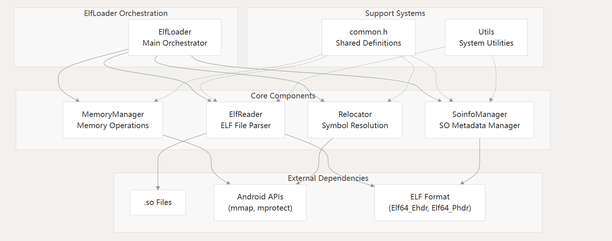

自定义Linker与SO加固 0x01 前言 在研究360加固方案时，我发现其采用了一种独特的保护机制：在主SO文件内部嵌套了另一个SO文件，相当于为主SO添加了一层保护壳。这种技术实现引起了我的兴趣，经过深入研究，整理出本文，分享自定义Linker的实现原理及SO加固技术
0x02 Linker源码分析 PS：这部分有点长，如果你只想看怎么实现的，可以直接跳到总结 核心代码解析（只贴关键部分，不然太长了） do_dlopen - 一切的起点 1 2 3 4 soinfo* si = find_library(name); if (si != NULL ) { si->CallConstructors(); }
看起来很简单对吧，让我们深入看看这两个函数都干了啥
find_library - 负责找SO的函数 1 2 3 4 5 6 7 static soinfo* find_library (const char * name) { soinfo* si = find_library_internal(name); if (si != NULL ) { si->ref_count++; } return si; }
CallConstructors - 调用构造函数 1 2 3 4 5 6 7 8 9 10 11 12 13 14 if (dynamic != NULL ) { for (Elf32_Dyn* d = dynamic; d->d_tag != DT_NULL; ++d) { if (d->d_tag == DT_NEEDED) { const char * library_name = strtab + d->d_un.d_val; TRACE("\"%s\": calling constructors in DT_NEEDED \"%s\"" , name, library_name); find_loaded_library(library_name)->CallConstructors(); } } } TRACE("\"%s\": calling constructors" , name); CallFunction("DT_INIT" , init_func); CallArray("DT_INIT_ARRAY" , init_array, init_array_count, false );
这里有个有趣的地方：DT_INIT和DT_INIT_ARRAY是很多加固方案的脱壳点，因为这是SO被加载后最早执行的地方之一
find_library_internal - 真正干活的函数 1 2 3 4 5 6 7 8 9 10 11 12 13 14 15 16 17 18 19 20 21 22 23 24 25 26 27 28 29 30 31 static soinfo* find_library_internal (const char * name) { if (name == NULL ) { return somain; } soinfo* si = find_loaded_library(name); if (si != NULL ) { if (si->flags & FLAG_LINKED) { return si; } DL_ERR("OOPS: recursive link to \"%s\"" , si->name); return NULL ; } TRACE("[ '%s' has not been loaded yet. Locating...]" , name); si = load_library(name); if (si == NULL ) { return NULL ; } TRACE("[ init_library base=0x%08x sz=0x%08x name='%s' ]" , si->base, si->size, si->name); if (!soinfo_link_image(si)) { munmap(reinterpret_cast<void *>(si->base), si->size); soinfo_free(si); return NULL ; } return si; }
关于重定位 ：想象一下，你的SO文件里调用了printf函数，但编译的时候并不知道printf在内存的哪个位置，所以先用个占位符（比如call 0x1234）。重定位就是把这个占位符改成真实的地址
基本流程梳理 ：
find_loaded_library() ：先看看是不是已经加载过了load_library() ：没加载过，那就加载soinfo_link_image() ：处理各种动态信息，执行重定位
load_library - 真正的加载器 1 2 3 4 5 6 7 8 9 10 11 12 13 14 15 16 17 18 19 20 21 22 23 24 25 26 27 28 29 30 31 32 static soinfo* load_library (const char * name) { int fd = open_library(name); if (fd == -1 ) { DL_ERR("library \"%s\" not found" , name); return NULL ; } ElfReader elf_reader (name, fd) ; if (!elf_reader.Load()) { return NULL ; } const char * bname = strrchr (name, '/' ); soinfo* si = soinfo_alloc(bname ? bname + 1 : name); if (si == NULL ) { return NULL ; } si->base = elf_reader.load_start(); si->size = elf_reader.load_size(); si->load_bias = elf_reader.load_bias(); si->flags = 0 ; si->entry = 0 ; si->dynamic = NULL ; si->phnum = elf_reader.phdr_count(); si->phdr = elf_reader.loaded_phdr(); return si; }
ElfReader::Load() 1 2 3 4 5 6 7 8 bool ElfReader::Load () { return ReadElfHeader() && VerifyElfHeader() && ReadProgramHeader() && ReserveAddressSpace() && LoadSegments() && FindPhdr(); }
发现 ：Android只读Program Header，而IDA依赖Section Header！这就是为什么很多加固会”抹头”——把Section Header搞坏，IDA就懵了，但Android照样能跑
soinfo_link_image - 链接的核心 在si = load_library(name)拿到SO信息后，就要开始一系列复杂操作了：
1. 定位动态节 1 2 3 4 5 6 7 8 9 10 11 12 13 14 15 16 17 18 19 20 21 22 23 24 25 26 27 28 29 phdr_table_get_dynamic_section(const Elf32_Phdr* phdr_table, int phdr_count, Elf32_Addr load_bias, Elf32_Dyn** dynamic, size_t * dynamic_count, Elf32_Word* dynamic_flags) { const Elf32_Phdr* phdr = phdr_table; const Elf32_Phdr* phdr_limit = phdr + phdr_count; for (phdr = phdr_table; phdr < phdr_limit; phdr++) { if (phdr->p_type != PT_DYNAMIC) { continue ; } *dynamic = reinterpret_cast<Elf32_Dyn*>(load_bias + phdr->p_vaddr); if (dynamic_count) { *dynamic_count = (unsigned )(phdr->p_memsz / 8 ); } if (dynamic_flags) { *dynamic_flags = phdr->p_flags; } return ; } *dynamic = NULL ; if (dynamic_count) { *dynamic_count = 0 ; } }
又一个有趣的发现 ：源码只处理第一个PT_DYNAMIC段！所以你可以加多个动态节来迷惑IDA，因为IDA会全部解析，而Android只看第一个。这算是个小技巧吧~
2. 解析动态节 这部分代码太长了，主要就是初始化各种表：符号表、字符串表、重定位表等等。
3. 加载依赖库 1 2 3 4 5 6 7 8 9 10 11 12 13 14 15 for (Elf32_Dyn* d = si->dynamic; d->d_tag != DT_NULL; ++d) { if (d->d_tag == DT_NEEDED) { const char * library_name = si->strtab + d->d_un.d_val; DEBUG("%s needs %s" , si->name, library_name); soinfo* lsi = find_library(library_name); if (lsi == NULL ) { strlcpy(tmp_err_buf, linker_get_error_buffer(), sizeof (tmp_err_buf)); DL_ERR("could not load library \"%s\" needed by \"%s\"; caused by %s" , library_name, si->name, tmp_err_buf); return false ; } *pneeded++ = lsi; } }
4. 重定位操作 1 2 3 4 5 6 7 8 9 10 11 12 13 14 15 16 17 18 19 20 21 22 23 if (si->has_text_relocations) { DL_WARN("%s has text relocations. This is wasting memory and is " "a security risk. Please fix." , si->name); if (phdr_table_unprotect_segments(si->phdr, si->phnum, si->load_bias) < 0 ) { DL_ERR("can't unprotect loadable segments for \"%s\": %s" , si->name, strerror(errno)); return false ; } } if (si->plt_rel != NULL ) { DEBUG("[ relocating %s plt ]" , si->name ); if (soinfo_relocate(si, si->plt_rel, si->plt_rel_count, needed)) { return false ; } } if (si->rel != NULL ) { DEBUG("[ relocating %s ]" , si->name ); if (soinfo_relocate(si, si->rel, si->rel_count, needed)) { return false ; } }
小结一下 说白了，Linker就是个搬运工，把磁盘上的SO文件按照一定的规则搬到内存里，让我们的程序能够调用。主要干这么几件事：
1. 加载ELF文件
用mmap把SO文件映射到内存（就像把文件”贴”到内存里）
解析各种头部信息
给.bss、.data这些段分配空间
2. 处理依赖关系
看看这个SO依赖哪些其他的SO
把依赖的SO也加载进来（递归的过程）
建立依赖关系图，避免重复加载
3. 符号解析和重定位
找到导出的函数和变量
修正函数调用地址
处理各种符号冲突
4. 执行初始化
0x03 自定义Linker实现 基于对Android Linker的理解，实现自定义Linker无需像AOSP源码那样考虑所有情况。我们可以专注于核心功能，实现一个精简版本
详细实现可参考：自實現Linker加載so
我实现的自定义Linker项目：soLoader
架构设计 组件关系图 ：

核心组件职责 ：
组件名称
主要功能
关键操作
ElfLoader系统协调器和公共API
LoadLibrary(), GetSymbol(), CallConstructors()
ElfReaderELF文件解析与验证
读取头部、提取程序头、验证格式
MemoryManager内存分配与保护
mmap()操作、段加载、权限设置
SoinfoManager共享对象元数据管理
soinfo结构创建、依赖跟踪
Relocator符号解析与重定位
处理重定位、解析符号、处理PLT/GOT
Utils系统工具与内省
系统调用、ELF结构辅助函数
具体实现原理请参考项目源码
0x04 SO加固实现 加固方案设计 以360加固为例，其核心思想是将主SO加密后嵌入壳SO中。壳SO作为loader被原生Linker加载后，负责解密、映射、链接、重定位主SO，最终调用主SO的函数来释放DEX
我们自己在设计的时候可以直接照搬这种模式，但是把两个so合并的操作有些麻烦，而且主SO本身就是被加密的，我个人觉得放在哪里都无所谓，你要想解密都得去分析壳SO，所以这里我实现了一个简化的版本，把主SO加密之后藏在了图片的后面，这样看上去它就是一张普通的图片
为简化实现，本方案采用以下设计：
不将两个SO合并，而是将加密的主SO隐藏在APK资源中
选择res/mipmap/ic_launcher.webp（应用图标）作为载体
使用RC4算法加密主SO，并添加魔数标识便于定位
加密实现 加密脚本的核心功能：
1 2 3 4 5 6 7 8 9 10 11 12 13 14 15 16 17 18 19 20 21 22 23 24 25 26 27 28 29 30 31 32 33 34 35 36 37 38 39 40 41 42 43 44 45 46 47 48 49 50 51 52 53 54 55 56 57 58 59 60 61 62 63 64 65 66 67 68 69 70 71 72 73 74 75 76 """ python prepare_hidden_so.py <so_file> <webp_image> <output_image> <key> """ import sysimport osimport structMAGIC_HEADER = b"Yuuki" def rc4_init (key ): """初始化RC4 S盒""" S = list (range (256 )) j = 0 key_len = len (key) for i in range (256 ): j = (j + S[i] + key[i % key_len]) & 0xFF S[i], S[j] = S[j], S[i] return S def rc4_crypt (S, data ): """RC4加密/解密""" S = S.copy() i = j = 0 result = bytearray () for byte in data: i = (i + 1 ) & 0xFF j = (j + S[i]) & 0xFF S[i], S[j] = S[j], S[i] k = S[(S[i] + S[j]) & 0xFF ] result.append(byte ^ k) return bytes (result) def main (): if len (sys.argv) != 5 : print (f"Usage: {sys.argv[0 ]} <so_file> <webp_image> <output_image> <key>" ) return 1 so_file = sys.argv[1 ] webp_image = sys.argv[2 ] output_image = sys.argv[3 ] key = sys.argv[4 ].encode('utf-8' ) with open (so_file, 'rb' ) as f: so_data = f.read() with open (webp_image, 'rb' ) as f: webp_data = f.read() S = rc4_init(key) encrypted_so = rc4_crypt(S, so_data) S_verify = rc4_init(key) decrypted = rc4_crypt(S_verify, encrypted_so) if decrypted != so_data: print ("Error: Encryption verification failed!" ) return 1 with open (output_image, 'wb' ) as f: f.write(webp_data) f.write(MAGIC_HEADER) f.write(struct.pack('<I' , len (so_data))) f.write(encrypted_so) print (f"加密完成！隐藏数据起始偏移: {len (webp_data)} " ) return 0 if __name__ == "__main__" : sys.exit(main())
解密流程 完整的解密加载流程：
资源提取 （Java层）内存映射与解密 （Native层）加载执行 （自定义Linker）
1. Java层资源提取 1 2 3 4 5 6 7 8 9 10 11 12 13 14 15 16 17 18 19 20 21 22 23 24 25 26 27 28 29 30 31 32 33 34 35 36 37 38 public static String getExtractedImagePath (Context context) { File tempDir = new File (context.getCacheDir(), "yuuki_temp" ); if (!tempDir.exists()) { tempDir.mkdirs(); } return new File (tempDir, "temp_image.webp" ).getAbsolutePath(); } public static boolean extractImageFromApk (Context context, String outputPath) { String apkPath = context.getApplicationInfo().sourceDir; try (ZipInputStream zip = new ZipInputStream (new FileInputStream (apkPath))) { ZipEntry entry; while ((entry = zip.getNextEntry()) != null ) { if (entry.getName().equals("res/mipmap-xxxhdpi-v4/ic_launcher.webp" )) { File outFile = new File (outputPath); File parent = outFile.getParentFile(); if (!parent.exists()) { parent.mkdirs(); } try (FileOutputStream out = new FileOutputStream (outFile)) { byte [] buffer = new byte [1024 ]; int len; while ((len = zip.read(buffer)) > 0 ) { out.write(buffer, 0 , len); } return true ; } } zip.closeEntry(); } } catch (IOException e) { e.printStackTrace(); } return false ; }
2. Native层解密实现 在ElfReader中添加解密功能：
1 2 3 4 5 6 7 8 9 10 11 12 13 14 15 16 17 18 19 20 21 22 23 24 25 26 27 28 bool ElfReader::HandleFileType () if (CryptoUtils::HasHiddenSO (mapped_file_, file_size_)) { LOGI ("检测到隐藏的SO文件，开始提取并解密..." ); void * decrypted_data = nullptr ; size_t decrypted_size = 0 ; if (!CryptoUtils::ExtractAndDecryptHiddenSO (mapped_file_, file_size_, &decrypted_data, &decrypted_size)) { LOGE ("提取和解密隐藏的SO失败" ); return false ; } decrypted_buffer_ = decrypted_data; is_decrypted_ = true ; munmap (mapped_file_, file_size_); mapped_file_ = decrypted_buffer_; file_size_ = decrypted_size; LOGI ("隐藏SO提取和解密成功，大小: %zu" , decrypted_size); } return true ; }
解密工具类的核心实现包括：
魔数头定位
RC4解密算法
ELF格式验证
内存管理
这样，自定义Linker就能透明地加载加密的SO文件，实现了简单的SO加固保护
0x05 总结 本文分析了Android Linker的工作原理，并基于此实现了自定义Linker和SO加固方案。整个项目涉及很多内存操作和底层知识，还是从中学到了很多东西的OvO。希望这篇文章对想了解Linker的同学有所帮助。如果有什么问题或建议，欢迎交流
参考资料 ：